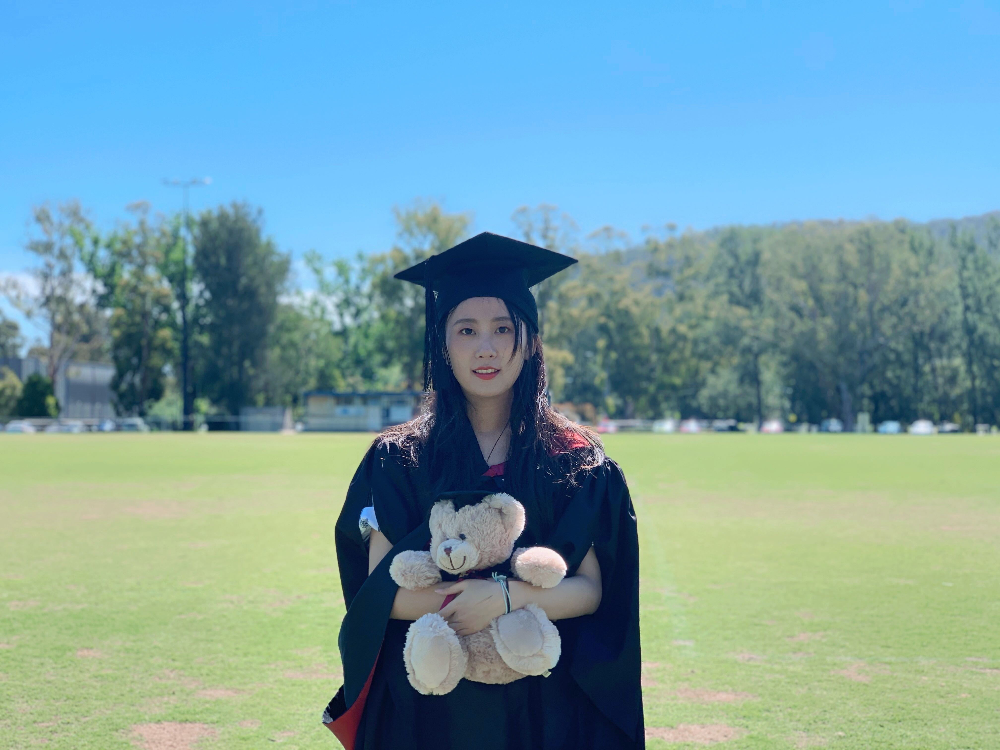
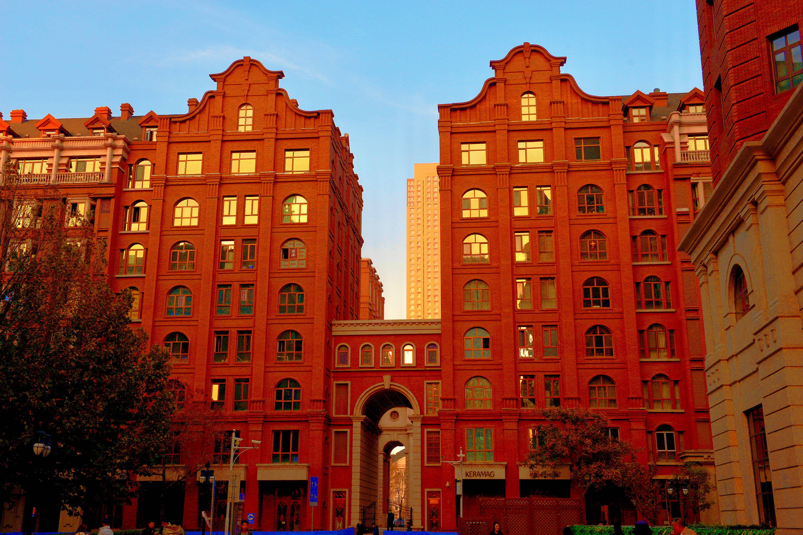

-

-

- 
- 
生命像一场旅行，目的地固然重要，但沿途的风景更加的珍贵和有意义。我生于西北，真诚和勤奋是从小养成的品格，留学新加坡和澳大利亚也是我自己的选择，留学开阔了我的眼界，让我变的更加自立和自强，也不断坚定着我回国报效的信念。天津是一座让人感到温暖和舒适的城市，以这座古韵之城为名的高等学府也扬名中外，我非常荣幸有机会用自己的学识和国际化的经历背景为中国的第一所现代化大学贡献一点微薄力量。
Life is a kind of journey. The destination is significant, but the scenery along the way is more meaningful and precious. I was born in Northwest China, and my sincerity and diligence have been cultivated since childhood. Studying overseas in Singapore and Australia is also my choice. These experiences broadended my horizons，trained me more independent and stronger inside, and also continuously strengthens my belief of the return to serve my country. Tianjin is a warm and comfortable city, and TJU is one of the top universities in the world. I am so excited and hornored to obtain an opportunity to contribute the first modern university in China with my hardworking and international background.
FROM 2012 TO 2016 DIPLOMA+BACHELOR
Singapore | Australia
新加坡共和理工学院 商务应用
澳大利亚国立大学 信息技术
Republic polytechnics Business Application
Australian National University Information Technonlgy
During my study, I majored in some basic programming courses like mySQL, java, python, html, etc., UI design, new media, project management, etc., and took elective courses like accounting and market analysis. I also studied SAP in school and received the SAP University Alliance Certificate. During my study in Singapore, I served as the deputy director of the External Relations Department of the Chinese Federation of Students on campus, planned and organized activities such as reading club and basketball games.I also participated in many volunteer activities, including organizing school's open house and visiting the local disabled elderly.I was conferred outstanding graduate when I finished my study in Republic Polytechnics. During my internship at DBS in Singapore, I was in charge of Excel data filtering and some paperworks.
FROM 2019 TO 2020 MASTER
Australia
澳大利亚国立大学 金融管理
Australia National University Financial Management
I majored in macroeconomics and microeconomics, financial statistics, international finance, etc. During my postgraduate study, Australia was affected by the epidemic, and many Chinese students lacked of masks and other prevention supplies, so I spontaneously joined volunteer activities such as "distributing masks to Chinese students" organized by local Chinese merchants in Canberra.
NOW
Tianjin
天津科荟建筑工程有限公司 文员
Tianjin Kehui Construction Engineering Co. Ltd Clerk
I am mainly responsible for handling general documentary, summarizing various types of data, and managing and maintaining databases. I am conscientious，responsible, helpful, and punctual at work. I also have strong team spirit when I work with others.